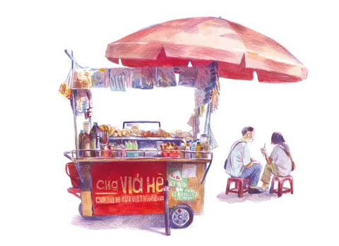
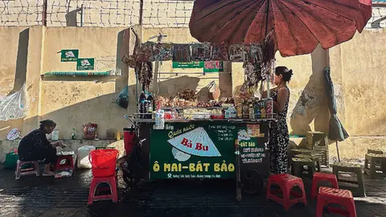

Chợ Vỉa Hè — phở bún chả
l'idée en une phrase
Le site est le carnet de voyage de votre famille : le papier, les dessins d'Oriane, et le jaune du restaurant pour les grands moments.
C'est déjà en ligne — regardez
Ce n'est pas qu'une maquette : deux pages fonctionnent déjà. Ouvrez-les, cliquez, regardez.
Voir l'accueil
la première page du site
Voir la carte avec les prix
tous les plats, recopiés de votre menu
Tout marche sur téléphone — c'est là que viennent 7 visiteurs sur 10.
le carnet… et le vrai
Le stand dessiné par Oriane est l'image d'accueil du site. Juste à côté, le vrai stand de la famille, « Bà Bu », au Vietnam. Le dessin et la réalité, l'un près de l'autre.


Les couleurs et les écritures
Les couleurs
Des taches d'aquarelle, pas des carrés froids : beaucoup de papier, quelques touches de couleur, et le jaune du restaurant gardé pour les boutons importants.
#F7F2E9#1E1A17#C0264B#E9531F#1E6E8C#2E7D32#F2B300Les écritures
Le nom « Chợ Vỉa Hè » empile des accents que beaucoup de belles polices cassent. On a gardé trois écritures qui affichent le vietnamien parfaitement — la phrase test le prouve sous chacune.
Chợ Vỉa Hè — phở bún chả
Chợ Vỉa Hè — phở bún chả ệ ộ ữ ơ đ Đ
Ce qu'on attend de vous aujourd'hui
Cinq points, cochés ensemble pendant la rencontre.
- Valider la carte et les prix — transcrits de votre menu.
- Le numéro SIRET + le nom du gérant — obligation légale, 2 minutes.
- Choisir 2–3 avis Google que vous aimez — on les affiche sur le site.
- Les accès : fiche Google et Zenchef — on optimise pour vous.
- Une idée en plus : un dessin « bún chả » à demander à Oriane — deux plats partagent le même dessin pour l'instant.
La suite
-
Vos retours
aujourd'hui -
Dernières retouches
de notre côté -
Mise en ligne
sur choviahe.fr, début août -
Ouverture officielle
1er septembre